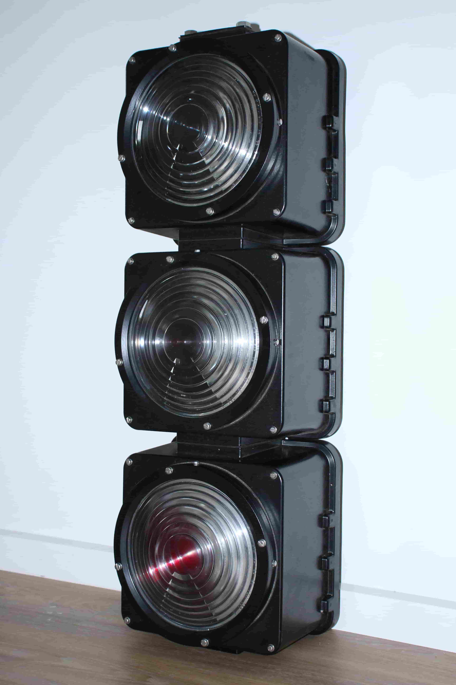
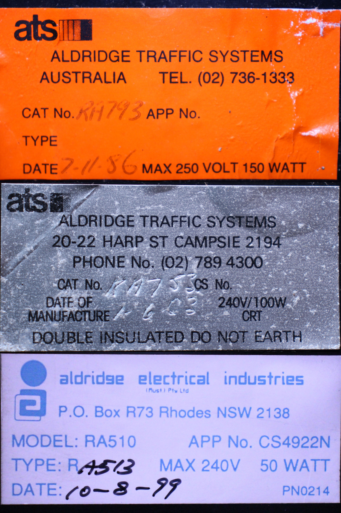
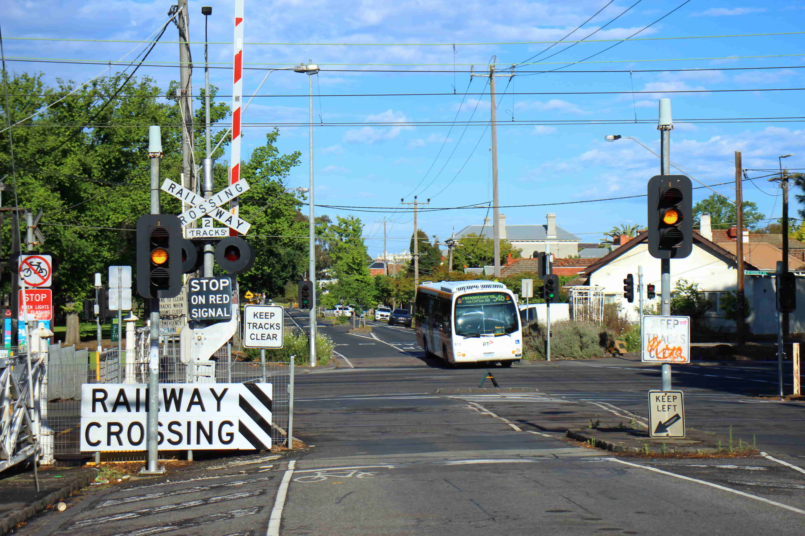

A collection of known Aldridge traffic light variants in Australia, mainly Victoria.
Last updated: 15th of Feburary, 2026.
Page created by pengo34789.

1990's AEI halogen signals - Ramsden St/Hoddle St, Clifton Hill, VIC
| Incandescent/Halogen Signals |
LED Signals |
LED Signs |
|---|---|---|
| Other equipment  |
Interesting Signals |
Documentation  |
15/02/2026: Created the Other Equipment page and Aldridge Electrical Industries CLS LED page
(New type of traffic light :D).
Other Equipment page includes ped. buttons, ATUs, traffic light contollers, Aldridge railway equipment.
Created documentation page - Includes links to several Aldridge websites.
(Not sure what else to do with this page.)
Added new prototype Aldridge Group 12" light to AG12" page along with info.
Merged Aldridge Traffic Group LED - Other Revision page into normal ATG LED page.
Merged Aldridge Traffic Group 'Weird LED' page into ATG CLS LED page.
Updated pages: Interesting Signals; ATS 'Durasig'; Aldridge Group 12"; AEI Incan.; ATS Incan.;
ATS LED; ATG LED; ATG CLS; AEI LED; LED Signs.
11/11/2025: Created the Interesting Signals - Tram Depots page; added a few new photos to the 'Early ats' incan/halogen pages, and to the ATG LED page. Also added 3 photos to the Interesting Signals page.
25/08/2025: Created the Interesting Signals page.
29/07/2025: Added new Google Streetview images to the Aldridge Group 8" incan page.

1980's ATS halogen signals - Yarra St/Burwood Rd, Hawthorn, VIC